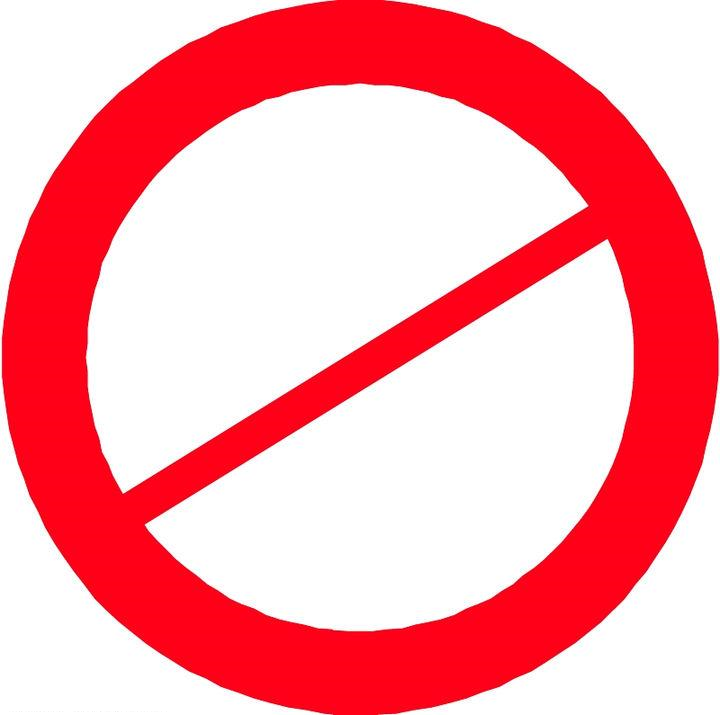

{{'SKU_INFO' | translate}}

{{sku}}
{{skuDescription}}
{{'PICK_NO' | translate}}
{{'LOCATION_INFO' | translate}}
{{'POSITION_EMPTY' | translate }}
{{'PROBLEN' | translate }}
{{'BASKET_FULL'| translate }}
货筐号码：{{canPinBasket}},里有{{damagedAmount}}商品，请重新确认是否继续使用当前货筐进行收货
{{'SURE' | translate }}
{{'CANCEL' |
translate }}
货筐号码：{{unScanBasket}},里有{{unScanSkuNo}}商品，请重新确认是否继续使用当前货筐进行收货
{{'SURE' | translate }}
{{'CANCEL'
|
translate }}
货筐号码：{{canPinBasketNo}},被工作站{{stationName}}绑定，请重新扫描残品货筐
货筐号码：{{canPinBasketNo}},并不是一个有效的残品货筐，请重新扫描
货筐号码：{{unScanSKUBasketNo}},被工作站{{stationName}}绑定，请重新扫描无法扫描商品货筐
货筐号码：{{unScanSKUBasketNo}},并不是一个有效的无法扫描商品货筐，请重新扫描
货筐号码：{{emptyBasketNo}},被工作站{{stationName}}绑定，请重新扫描空拣货货筐
货筐号码：{{emptyBasketNo}},并不是一个有效的空拣货货筐，请重新扫描
货筐号码：{{emptyBasketNo}},里有{{emptySkuNo}}商品，不能进行拣货，请重新扫描新的拣货货筐。
暗灯触发错误，请重新触发暗灯
{{'CANCEL' | translate }}
{{seriesNo}}
不是有效商品序列号，请重新扫描
商品：
{{wrongItem}}HUAWEI 华为 P9 3GB+32GB版 EVA-AL00 全网通4G手机(流光金)
如果均无法扫描，请按确认登记序列号无法扫描，并将商品放置到待调查货筐中
1{{'SURE' | translate }}
2{{'CANCEL'
| translate }}
{{BasketFullMessaage}}
{{'BASKET_FULL' | translate }}
请扫描已满的货筐条码
当前站台货筐信息：
| {{ 'POSITION_NO' | translate }} |
{{ 'PICKCAR_NO' | translate }} |
{{ 'SKU_COUNT' | translate }} |
| {{ x.PositionNo }} |
{{ x.name }} |
{{ x.sum }} |
当前需求拣货位置：c2{{column.name}}，请扫描货位以确认。
{{'POD_UNSCAN'
| translate }}
请逐一扫描c2{{column.name}}
货位中所有商品，以确认商品是否丢失，如果货位中商品数量为零，请直接点击货位为空按钮，系统将自动把商品盘亏。
{{'POSITION_EMPTY' | translate }}
商品条码错误：123456789{{eachSKUNo}}
请继续扫描，如果确定货位内商品已经扫描完毕，请点击
“我已扫描完所有商品”,系统将自动把商品盘亏。
{{'ALL_SKU_SCANED' | translate }}
点击确认，所有货筐自动结满，请将货筐放到指定位置
{{'SURE' | translate }}
{{'CANCEL' | translate }}